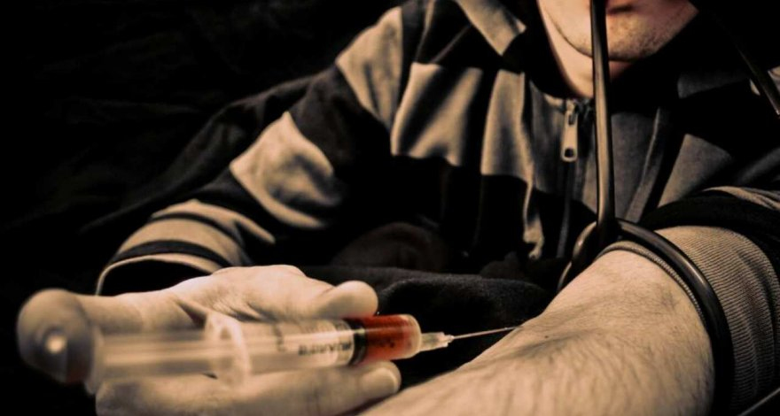

Наркомания
Наркомания – это болезненное влечение, сопровождаемое регулярным приемом психоактивных веществ с целью получения определенных ощущений и ухода от реальности. Данный вид аддиктивного поведения приводит к тотальному разрушению личности, ее нравственного, психического и физического здоровья. Ситуацию усугубляют другие сопутствующие наркомании заболевания, что может привести к преждевременной смерти.
Часто, опасаясь огласки, родственники наркоманов пытаются справиться с проблемой самостоятельно, что не приносит положительных результатов, а усугубляет проблему. Только обращение к специалистам может помочь справиться с проблемой. Комплексный подход в лечении данного психофизиологического расстройства дает шанс на успешное излечение болезни, на улучшение психоэмоционального состояния, социальную адаптацию и возможность начать новую жизнь без употребления психоактивных веществ.
|

|